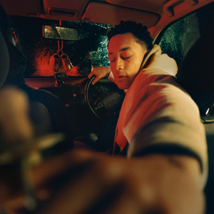
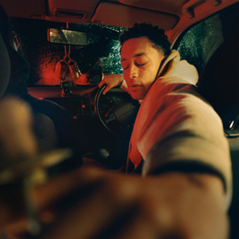

Hugo was met with critical acclaim. At Metacritic, which assigns a normalized
rating out of 100
to reviews from professional critics, the album received an average score of 87, based on 8
reviews. Writing in The Guardian, Damien Morris called the album a "beautiful, blistering
masterpiece," praising the "intense" production and elements of jazz, as well as the subject
matter. Fred Garratt-Stanley of the NME gave the album four stars out of five, named it Carner's
"most polished record yet".
Carner stated a desire for his music to be a "a true representation of the facts" for his son to
look back on, documenting Carner's life as a young, black, artist dealing with issues from his
past.
In hugo, there’s a central question that Loyle Carner keeps coming back to: “I’m young, Black,
successful and have a platform - but where do I go next?” The answer is explored in this epic
scream of a third album.
 
